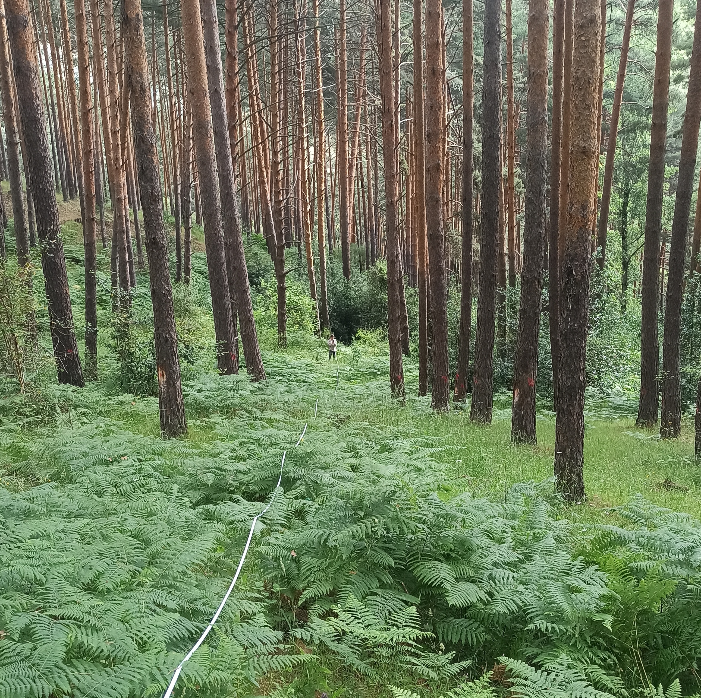

Research Lines

1. Ecological and Evolutionary Drivers of Quercus–Pinus Coexistence: A Multiscale Approach
FORECO aims to investigate the ecological and evolutionary factors that enable the coexistence of Quercus and Pinus species and their role in enhancing forest resilience to global change. Combining global datasets, evolutionary analyses, fieldwork and experimental approaches, the project examines patterns of co-occurrence, complementary functional strategies and processes of co-adaptation between species. It also evaluates the temporal stability and drought resilience of mixed forests. FORECO will provide a solid scientific basis for adaptive forest management, promoting mixed forests that are more productive and stable under climate change.
Funding: Ecological and evolutionary drivers of Quercus–Pinus coexistence:
a multiscale approach (FORECO)
Comunidad de Madrid, 2026–2031. 515.661,41 €
PI: Jesús López Angulo (Universidad Rey Juan Carlos).

2. Impacts of Sporting Activities on Mountain Ecosystems
One of the primary research lines focuses on evaluating the impacts of sporting activities on high-mountain ecosystems, which are considered among the most vulnerable to climate change. Preliminary results from the ECORUN project reveal that sporting activities, particularly trail running, generate significant impacts outside designated trails in several studied national parks. These activities especially affect high-mountain plants. The objective of this line is, on one hand, to quantify the impact of these activities on the biodiversity and functionality of mountain ecosystems, identifying the most vulnerable species, and on the other hand, to develop strategies to support the sustainable and ecological management of recreational activities in protected areas. This research is expected to contribute to the implementation of management measures that balance ecosystem conservation with recreational use.
Funding:
ECORUN – Tracking RUNning’s impact on alpine ECOsystems in the Digital Era
Instituto de Investigación en Cambio Global (IICG-URJC).
01/01/2025 – 31/12/2025. €3,700.
PI: Jesús López Angulo (Universidad Rey Juan Carlos).

3. Ecological and Evolutionary Mechanisms Driving Benefits in Diversified Agroecosystems
Another research line seeks to understand the mechanisms underlying the potential of species mixtures to enhance ecosystem services, such as increased productivity and adaptation to climate change. Our previous studies have demonstrated that species mixtures can increase ecosystem resilience to global change; however, the ecological and evolutionary processes responsible for these patterns remain poorly understood. I am currently collaborating with Professor Christian Schöb on research evaluating the role of genetic adaptation and phenotypic plasticity in resource partitioning, often observed in species interactions within intercropping systems. The results will contribute to identifying sustainable and climate-resilient agricultural solutions by developing adaptive cultivation practices and promoting agricultural biodiversity, while providing key scientific insights to guide future agricultural decisions and policies.
Funding:
The impact of plant–plant coevolution in crop mixtures on the stability and
resilience of an agroecosystem
Swiss National Science Foundation (SNSF), 01/07/2021 – 30/06/2023.
CHF 789,866 (approximately €850,000).
Co-PIs: Christian Schöb and PI: Jesús López Angulo (ETH Zurich).

4. Evaluating the Success of Forest Reforestation Efforts
This research line focuses on assessing the success of reforestation efforts carried out over the past 70 years in Castilla-La Mancha and the Community of Madrid, comparing these reforested areas with mature reference forests. Currently, a comprehensive analysis of biological diversity and ecosystem functionality indicators is underway to identify the key factors determining the success of these interventions. In this regard, my intention is to delve deeper into the characteristics of reforestations that promote soil resilience and functionality, leveraging my previous experience in plant–soil interactions. The objective is to generate recommendations for decision-making in the planning and management of forest biodiversity, promoting strategies that maximize the resilience and ecosystem benefits of reforested forests. This research is expected to have a direct impact on improving forest management policies in the region.
Funding:
BIOFOREST: Biodiversidad y funcionamiento ecosistémico en restauraciones
forestales: un análisis a gran escala espacial y temporal.
Fundación Biodiversidad. 03/07/2022 – 31/12/2025. €352,525.
PI: Ana I. García Cervigón (Universidad Rey Juan Carlos).
INTETRESTs: Diversidad de interacciones bióticas y su papel en el funcionamiento
ecosistémico de las restauraciones forestales.
Agencia Estatal de Investigación. 01/12/2022 – 31/07/2025. €255,300.
PIs: Ana I. García Cervigón and Isabel Martínez
(Universidad Rey Juan Carlos).